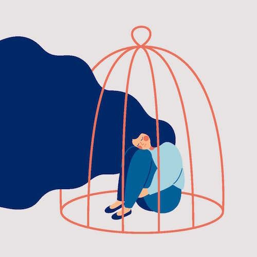

Save Our Mental
Apa itu Mental Illness?Gangguan mental atau gangguan jiwa adalah penyakit yang memengaruhi emosi, pola pikir, dan perilaku penderitanya.
Jenis Gangguan Mental
Depresi
Bipolar
Kecemasan
Sress Pasca Trauma (PTSD)
Gangguan Obsesif Kompulsif (OCD)
Psikosis
dan lain lain.
Gejala Kesehatan Mental
Berteriak atau berkelahi dengan keluarga dan teman-teman.
Delusi, paranoid, atau halusinasi.
Kehilangan kemampuan untuk berkonsentrasi.
Ketakutan, kekhawatiran, atau perasaan bersalah yang selalu menghantui.
Ketidakmampuan untuk mengatasi stres atau masalah sehari-hari.
Merasa sedih, tidak berarti, tidak berdaya, putus asa, atau tanpa harapan.
Pencegahan Kesehatan Mental
Beberapa upaya yang bisa dilakukan
Melakukan aktivitas fisik dan tetap aktif secara fisik.
Memelihara pikiran yang positif.
Mencari bantuan profesional jika diperlukan.
Menjaga hubungan baik dengan orang lain.
Menjaga kecukupan tidur dan istirahat.
Pengobatan Kesehatan Mental
Beberapa pilihan pengobatan yang akan dilakukan dokter dalam menangani gangguan mental, antara lain:
Psikoterapi. Psikoterapi merupakan terapi bicara yang memberikan media yang aman untuk pengidap dalam mengungkapkan perasaan dan meminta saran. Psikiater akan memberikan bantuan dengan membimbing pengidap dalam mengontrol perasaan.
Obat-obatan. Pemberian obat-obatan untuk mengobati penyakit mental umumnya bertujuan untuk mengubah senyawa kimia otak di otak. Obat-obatan tersebut berupa golongan selective serotonin reuptake inhibitor (SSRI), serotonin-norepinephrine reuptake inhibitor (SNRIs), dan antidepresan trisiklik. Obat-obatan ini umumnya dikombinasikan dengan psikoterapi untuk hasil pengobatan yang lebih efektif.
Rawat inap. Rawat inap diperlukan jika pengidap membutuhkan pemantauan ketat terhadap gejala-gejala penyakit yang dialaminya atau terdapat kegawatdaruratan di bidang psikiatri, misalnya percobaan bunuh diri.
Support group. Support group umumnya beranggotakan pengidap penyakit mental yang sejenis atau yang sudah dapat mengendalikan emosinya dengan baik. Mereka berkumpul untuk berbagi pengalaman dan membimbing satu sama lain menuju pemulihan.
Membuat rencana bagi diri sendiri, misalnya mengatur gaya hidup dan kebiasaan sehari-hari, untuk melawan penyakit mental. Rencana ini bertujuan untuk memantau kesehatan, membantu proses pemulihan, dan mengenali pemicu atau tanda-tanda peringatan penyakit.
Kapan Harus ke Dokter?
Jika diri sendiri atau kerabat menunjukkan gejala-gejala yang telah disebutkan di atas secara terus-menerus dan tidak membaik, sebaiknya segera memeriksakan diri ke dokter spesialis jiwa atau psikiater untuk mendapatkan pemeriksaan dan penanganan lebih lanjut.